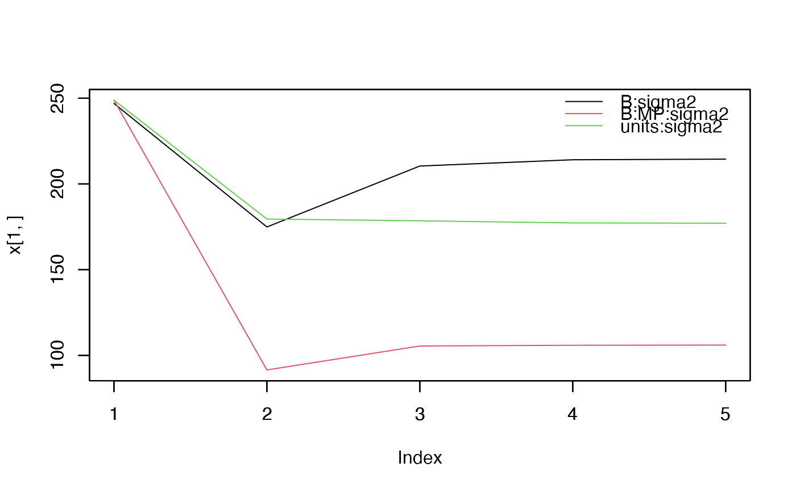

plot the change of VC across iterations
plot.monitor.Rdplot for monitoring.
Examples
data(DT_yatesoats, package="enhancer")
DT <- DT_yatesoats
head(DT)
#> row col Y N V B MP
#> 1 1 1 91 0.2 Victory B2 Victory
#> 2 2 1 61 0 Victory B2 Victory
#> 3 3 1 121 0.4 Marvellous B2 Marvellous
#> 4 4 1 144 0.6 Marvellous B2 Marvellous
#> 5 5 1 149 0.6 GoldenRain B2 GoldenRain
#> 6 6 1 108 0.2 GoldenRain B2 GoldenRain
m3 <- mmes(fixed=Y ~ V + N + V:N,
random = ~ B + B:MP,
rcov=~units,
data = DT)
#> Solver selected: ldlt
#> OpenMP available: up to 8 threads.
#> OpenMP active: parallel SLQ log-determinant probes (8 probes).
#> Working-coordinate trust scaling applied: alpha=0.830121
#> iteration LogLik wall cpu(sec) restrained EM weight pivot
#> 1 -13.8039 21:18:6 0 0 1 4.81656
#> 2 -11.5674 21:18:6 0 0 0.813615 6.80191
#> 3 -11.4975 21:18:6 0 0 0.661969 6.76374
#> 4 -11.4965 21:18:6 0 0 0.538588 6.80222
#> 5 -11.4965 21:18:6 0 0 0.438203 6.807
pmonitor(m3)
